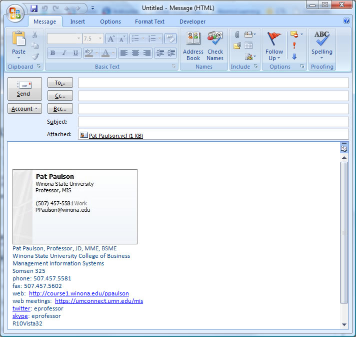

These exercises provide experience with the Outlook Desktop client application to organize your work, and make more efficient use of your time.
After completing this assignment you will be able to use the Outlook Desktop client to:
This assignment will cover several basic Outlook features, you are encouraged to explore on your own to find additional features that will make you more productive.
Make sure that Outlook 2016 is properly setup on your computer before proceeding. If necessary, contact Tech Support in Somsen 207 for assistance.
Review this Lynda.com video on creating an Outlook Appointment "Outlook Appointment" Play the video on one monitor, have Outlook 2016 open on another monitor. Hint: if you need help, go to Lynda.com and search for 'Outlook 2016'. There is a very good 48m video Learn Outlook 2016, and more.
Your task is to create an Outlook appointment for yourself to set aside time to study for this course.
(50) 1. How can this task be accomplished using the Outlook calendar?
(50) 2. Use the Snipping Tool to make a screen shot of the item you created in the Outlook calendar. Save the screen shot as "Ex1" in your ' ' folder. You will be combining screen shots from several exercises at the end of this assignment, just as you did in Formative00-PDF File Creation.
Review this Lynda.com video on creating an Outlook Appointment "Outlook Signature" Play the video on one monitor, have Outlook 2016 open on another monitor. Hint: if you need help, go to Lynda.com and search for 'Outlook 2016 basics'. There is a very good 49m video 'Learn Outlook 2016: The Basics', and more.
Your task is to create an Outlook signature block that contains a Business Card for your emails.
Make a screen shot of an email containing a signature block and a Business Card in Outlook. It will look something like this:  (50) 3. What must you create first in Outlook before you can create a Business Card?
Send a test email to yourself.
(50) 5. Briefly describe the reason to send a test email to yourself. Hint: Answer the question 'what does it mean if I do not receive the test email?'
Consider the impact on your professional reputation of incorrect spelling and poor grammar.
(50) 6. Briefly explain why it is a good idea to spell and grammar check all emails before you press Send.
Use Outlook to create a recurring appointment with the following settings:
(50) 7. Briefly describe the value of creating recurring appointments.
(50) 8. Make a screen shot of your recurring appointment settings from the Outlook dialog box. Save the screen shot as "Ex5" in your ' ' folder.
In this exercise, please read all of these instructions first. You are going to create a calendar feed from D2L for this course, and install this feed into Outlook so that you know all the assignment due dates for this course. Using your browser, please login to D2L and find this course.
Use a web browser to verify that you have published your website to https://classes.winona.edu/... Check that your name, StarID, email, class, semester, section and all of your answers are correct and visible. From the menu choose File>Print... and using "Microsoft Print to PDF" save a copy of this assignment as a .pdf file in your ' ' folder.
(50) 10. Save your file 'WebPage.pdf' to the ' ' folder.
Create one .pdf (portable document format) file from the screen shots that you have taken by following these steps.
(50) 11. Save your file 'ScreenShots.pdf' to the ' ' folder.
Use PDFill to merge the WebPage.pdf file with the ScreenShots.pdf file, and save it as 'Summative02.pdf' in ' ' folder.
(50) 12. Upload your file 'Summative02.pdf' to the D2L 'Summative02' Assignment folder.
Use a browser to view your completed and published website at: https://classes.winona.edu/... Ensure that you have linked this assignment on your home page. Note that your screen shots do not have to be completed to perform this step.